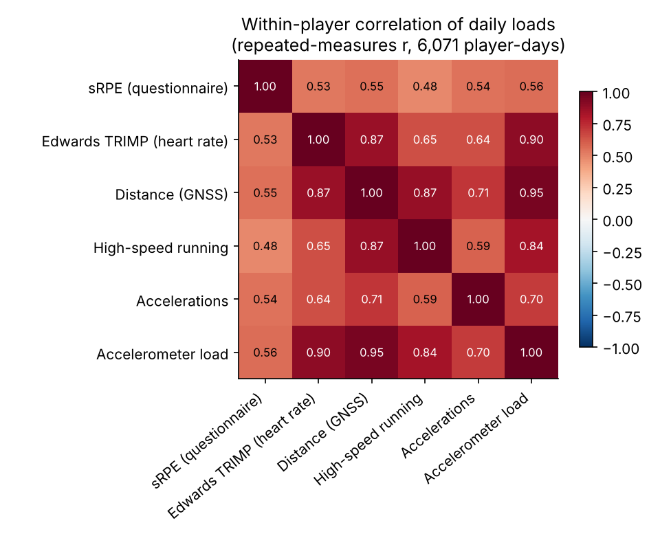
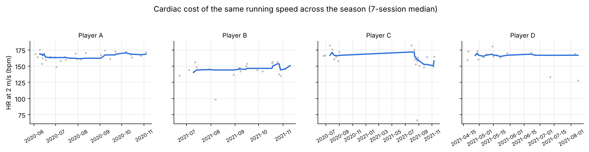
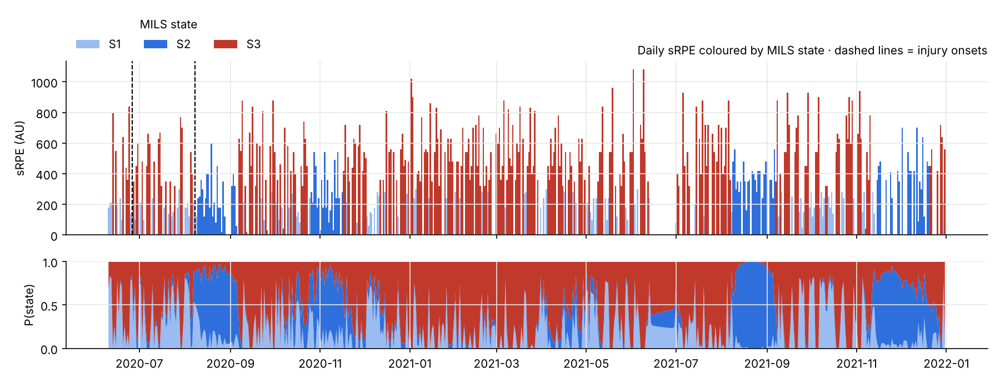
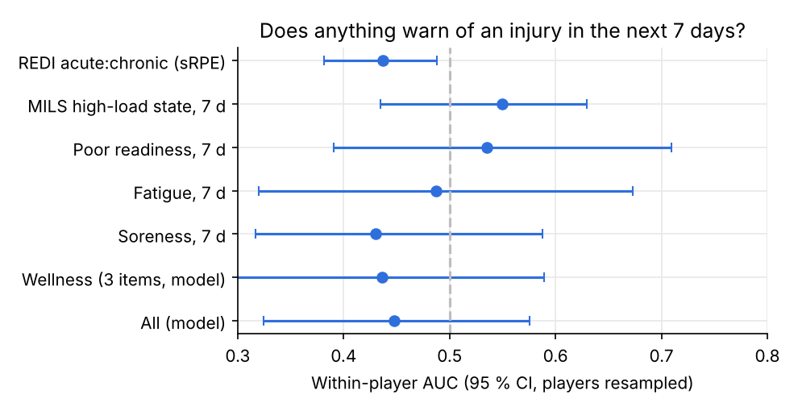
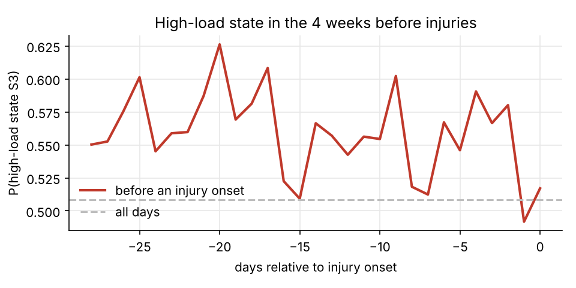

Sport science · hidden Markov models · open data
What load says, and what it does not
Two seasons of an elite women's football squad: questionnaires, GNSS and heart rate, aligned day by day. How internal and external load agree, what hidden load states look like with MILS, and whether any of it warns of an injury.
1 · Heart rate × GPS
Internal and external load agree, within a player
Correlations are computed within each player (repeated-measures correlation): a player who always covers more distance at a lower heart rate cannot create a correlation by herself. On 6,071 player-days (46 players) with both a questionnaire and a recording:
- Heart-rate load (Edwards TRIMP) follows distance (r = 0.87) and accelerometer load (r = 0.90) closely.
- The questionnaire (sRPE) agrees with heart rate (r = 0.53, 95 % CI [0.48; 0.57], 894 days) and with distance (r = 0.55), but less: perceived effort carries something the sensors do not.

The cardiac cost of the same running speed
From 30-second epochs, heart rate is regressed on speed in each session and read at 2 m/s. Only 207 sessions (30 players) qualify: a valid strap and enough running epochs for a stable regression. Its within-player link with the morning's wellness is weak and not in the expected direction (readiness r = 0.12 [−0.06; 0.31]; fatigue r = 0.08). As measured here, it is not yet a usable indicator: it needs a strap worn every session, or a standard running drill to read it on.

2 · Load states (MILS)
Three hidden states in the daily load
MILS (Markov Index Load State, Q. De Larochelambert & K. Barlier, INSEP) fits a hidden Markov model to
each player's daily load, z-scored against her own habits. A rest day is missing, not a low value.
The package is in R; it is reimplemented here in Python and checked against hmmlearn.
- Typical sRPE in each state: S1 240 AU, S2 420 AU, S3 630 AU; S3 holds 49% of the days.
- Probability of staying in the same state the next day: S1 34% · S2 96% · S3 71%. S2 is a lasting regime of below-habit load; S1 days are isolated light days within training weeks.
- The BIC (2 states 38,648, 3 states 38,293, 4 states 38,081) would prefer more states for sRPE; three are kept, the MILS default, because they stay interpretable for a staff.
- States from the questionnaire and from heart rate agree little (Cohen's κ = 0.05): "high load" depends on which load you measure.

3 · Injuries
Does anything warn of an injury in the next 7 days?
For each day a player was not injured (24,696 days, 55 injury onsets), the outcome is an injury starting in the next 7 days. Each indicator is judged by its within-player AUC: are a player's days before an injury ranked above her own other days? 0.5 is chance. Combined indicators use a logistic model that never saw the player it predicts.
| Indicator | AUC | 95 % CI | Days before injury | Players |
|---|---|---|---|---|
| REDI acute:chronic (sRPE) | 0.44 | 0.38 – 0.49 | 232 | 12 |
| MILS high-load state, 7 d | 0.55 | 0.43 – 0.63 | 232 | 12 |
| Poor readiness, 7 d | 0.53 | 0.39 – 0.71 | 180 | 11 |
| Fatigue, 7 d | 0.49 | 0.32 – 0.67 | 180 | 11 |
| Soreness, 7 d | 0.43 | 0.32 – 0.59 | 180 | 11 |
| Wellness (3 items, model) | 0.44 | 0.28 – 0.59 | 180 | 11 |
| All (model) | 0.45 | 0.32 – 0.58 | 180 | 11 |
No indicator does better than chance with any confidence: every interval includes 0.5. The best, MILS high-load state, 7 d, reaches 0.55 (0.43 – 0.63).
The 55 injury onsets come from only 12 players, and injuries are self-reported, so the test has little power. The finding still matches the literature (Impellizzeri et al. 2020): these indicators help plan training; they do not predict a given player's injury.


Method
Choices that matter
Governed data
Every input comes from the marts of a dbt warehouse whose rules found frozen heart-rate sensors, missing sessions and twice-pseudonymised players before any analysis ran.
Within-player statistics
Correlations and AUCs compare each player with herself. A pooled leave-one-player-out AUC is biased here (it fell far below 0.5): the reason is in the code.
Missing is not zero
No report, no session and no strap are three different things, and none of them becomes a 0 in a model.
Limits
Two teams, self-reported injuries, heart rate on a minority of sessions, and 28 players whose GNSS data cannot be linked to their questionnaires.
pip install -e .
python analysis/run_analysis.py --marts https://raw.githubusercontent.com/Clement0242/athlete-data-governance/main/data/marts
python analysis/build_report.pyData: SoccerMon, Midoglu C. et al. (2024), Scientific Data 11, 553 (CC-BY 4.0). MILS: De Larochelambert Q., Barlier K., github.com/quentincad2/MILS (GPL-3); this repository is GPL-3 as well.